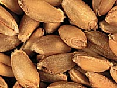
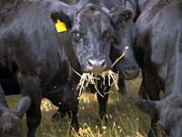

|
|

|
|
|
|
|
|
|
What is a cereal?
Man's most widely used crops are the cereals. Cereals are members of the grass family (Gramineae),
which produce large edible grains either for human or livestock consumption.
|
|

The grain or seed (wheat kernels are seen here) is an edible fruit,
consisting of the endosperm and the embryo (or germ).
The endosperm is stored food and makes up the majority of the seed. White wheat
flour consists of the endosperm of a grain of wheat. Wheat germ is also sold in
stores and is used in many bread recipes.
|

Grains are rich in carbohydrates and contain substantial amounts of protein, as well as some fat and vitamins.
|
Why would they be grown?
Wheat, rice, barley, oats, rye (temperate climes) and maize (corn) (tropical /subtropical climes) are the six principle cereal crops, which, worldwide, provide over half of man's food energy and much of the essential proteins and vitamins.
|

Over 70% of the world's harvested area is planted to grains, for an output of a billion and a half tonnes a year. Sorghum, and millet are also used in subtropical and tropical countries like Asia and Africa.
Cereals are excellent converters of energy (wheat is almost twice as efficient as the potato at converting the sunlight's energy into food). They are principally grown as an energy source with maize being the highest, and oats the lowest. They are also a good source of protein (4-16%), but have a poor amino acid balance (being deficient in lysine and methionine).
|
Cereal crops also have industrial uses including; - paper
- adhesives
- food thickeners
- and food preservatives.
|
|
Which cereals are the most important?
On a world scale, wheat and rice are the most important cereals. They are used directly for human consumption (as is rye).
|

Maize, barley, and oats are principally animal feed.
|

The most widely used animal feeds are different pasture grasses, which may be grazed, harvested and fed as hay or fermented to be fed as haylage or silage.
|
Why have cereals received so much attention for domestication and development?
There are many reasons that cereals were domesticated and have been used so extensively for agriculture. A few of these reasons are listed.
- Members of the grass family are hardy and well adapted to a wide range of growing conditions, occupying many habitats and yielding seeds even under harsh conditions. They are found everywhere that plants grow.
- Due to the fact that annuals are selected, food production is ensured each year, and in some areas, more than once a year.
- Fully ripened grass seeds are fairly small, with a very low water content. This enables them to be transported and handled easily, as well as being able to be stored under cool dry conditions for a long period of time. The lower water content also means that the seed has higher energy value.
- Wheat, rice, and corn supply most of the plant energy to the world today.
- Rice is grown in almost 90 countries, mostly consumed locally. It provides from 25-80% of the daily caloric intake of nearly half of the world's population.
- Wheat has the highest protein content of any cereal, and is the highest in production and trade volume.
|
|
|
|
|